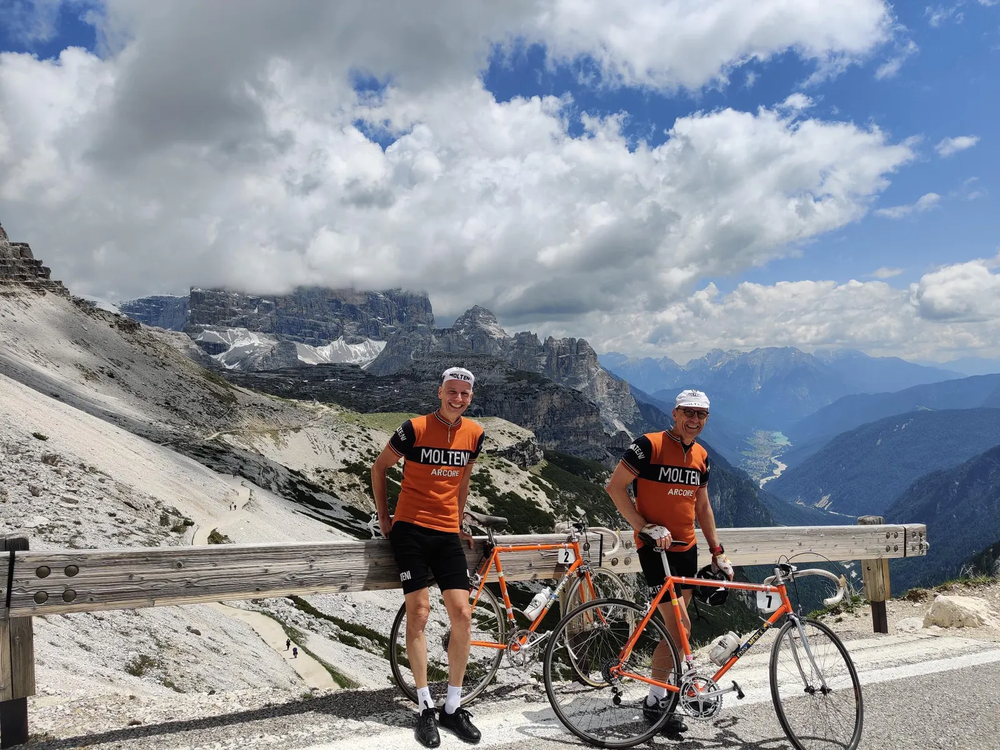
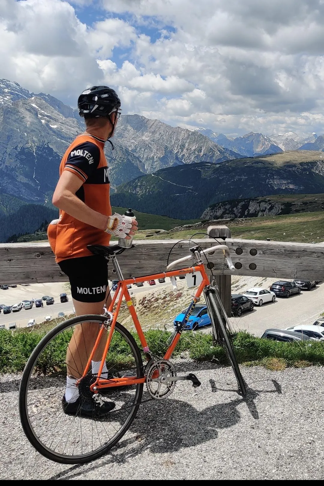
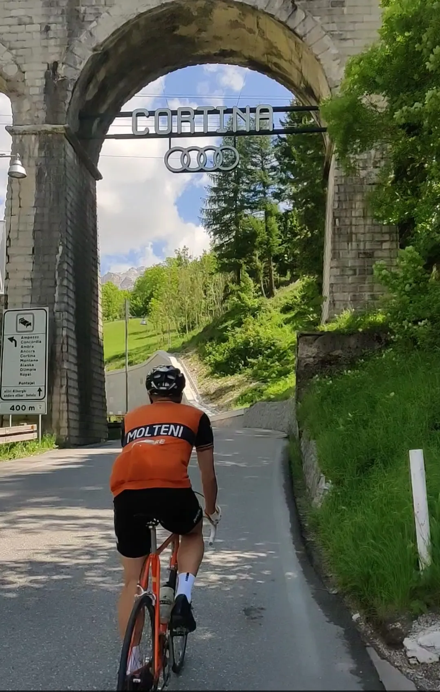
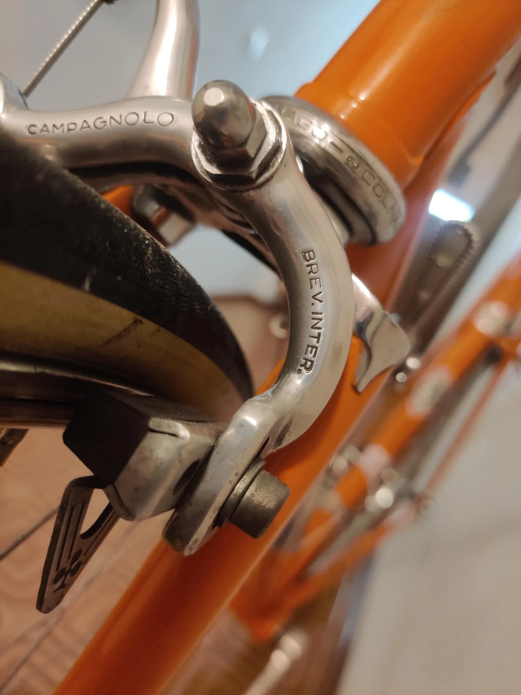
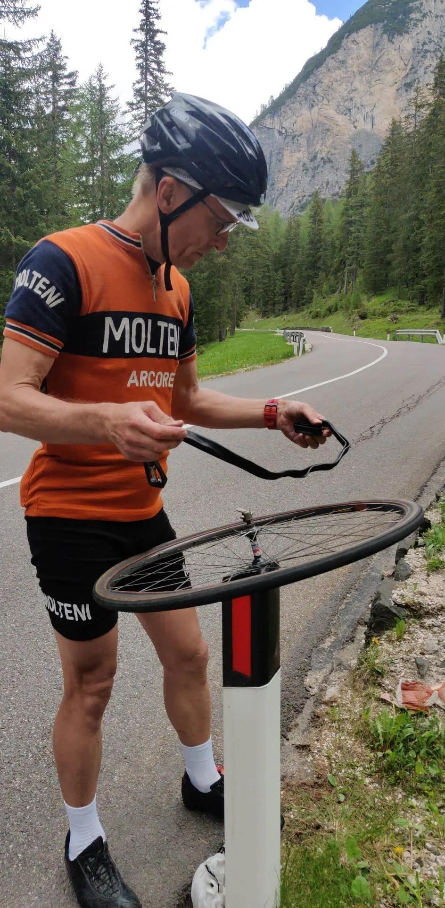

Nedtælling til Lombardiet Revenge Tour 1973 – Storslåethed og nærdødsoplevelser.

Mandag stod legendariske Tre Cime di Lavaredo på træningsprogrammet. 114 km, 3600 højdemeter og et kort visit til Cortina d’Ampezzo, der (igen) skal være vært for vinter-OL i 2026. Byen, som i parentes bemærket var den sneklædte high-end lokation, hvor agent 007 i 1981 rullede ind i hans kobberfarvede Lotus Esprit Turbo med to sæt ski på taget.
Denne dag var dog uden James Bond, men med duoen Leegaard og Blume som smooth operators i et par stærkt kritiske situationer.
Det startede ellers godt, beretter Eigil Leegaard, igen idag på telefon fra Ufficio turisticos baglokale.
Turen til Cortina gik fint, vores tempo holdt opportunisterne fra at tage fronten og vi kom godt ind på stigningen efter søen i Misurina. De sidste fire km blev forceret i klassisk, huggende 42-28 stil og der var afmålte nik og håndtryk fra de slagne carbonister på toppen. Og udsigten? Jamen, altså… Gudesmukt, storslået, malerisk.

Herefter blev Leegaard/Blume duoen dog tvunget i defensiven.
”Der er noget der rasler”, funderer Blume på den øverste del af nedkørslen fra Tre Cime – og stopper. Pling, siger det, da den lukkede møtrik fra Campa-forbremsen, drysser ned på minus 14 %-asfalten. Ups…
Heldigvis er møtrikken ikke rullet i grøften, så bremsen samles og fingerspændes løbende på nedkørslen til Misurina, hvor den lokale pizza-ristorante udover et par slices med Molteni-salami også har en papegøjetang. Første attentatforsøg afværget.
”Der er noget der sejler”, konstaterer Leegaard tæt på 80 km/t-topfart på vej ned af Val Parola – og laver en svinsk svedig cykelekvilibristisk nedbremsning MED FLADT FORDÆK!
Andet attentatforsøg afværget. Leegaard kører vel ikke med nr. 007 for ingenting.
FORZA MOLTENI! – For Your Eyes Only



